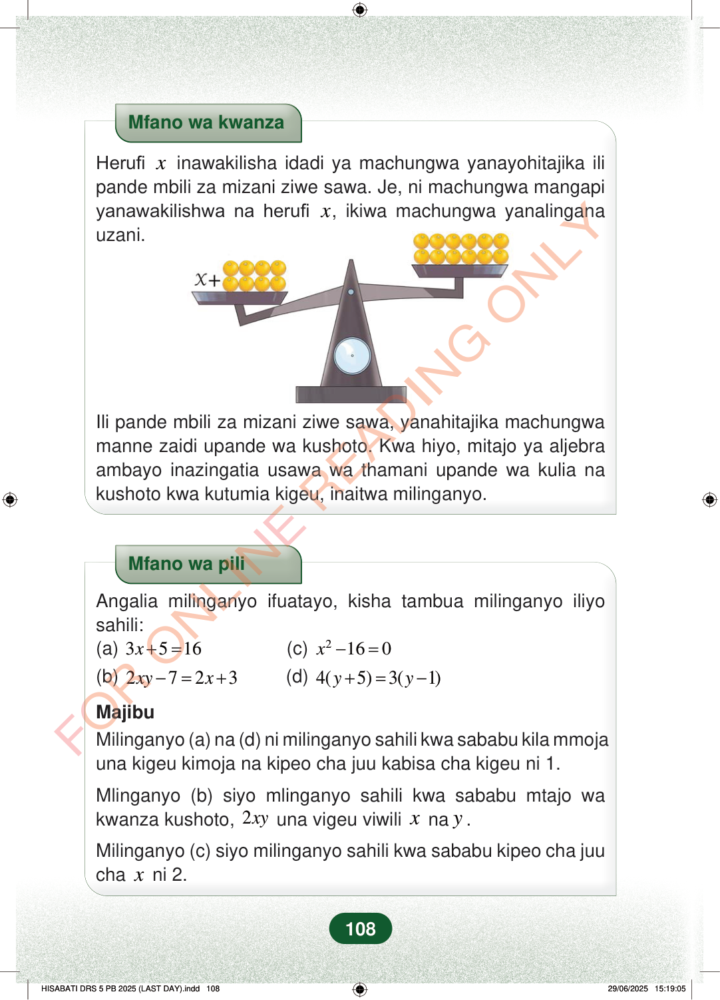

Mfano wa kwanzaHerufixinawakilisha idadi ya machungwa yanayohitajika ilipande mbili za mizani ziwe sawa. Je, ni machungwa mangapiyanawakilishwa na herufix, ikiwa machungwa yanalinganauzani.Ili pande mbili za mizani ziwe sawa, yanahitajika machungwamanne zaidi upande wa kushoto. Kwa hiyo, mitajo ya aljebraambayo inazingatia usawa wa thamani upande wa kulia nakushoto kwa kutumia kigeu, inaitwa milinganyo.Mfano wa piliAngalia milinganyo ifuatayo, kisha tambua milinganyo iliyosahili:(a)3516x+=(c)2160x−=(b)2723xyx−=+(d)4(5)3(1)yy+=−MajibuMilinganyo (a) na (d)ni milinganyo sahili kwa sababu kila mmojauna kigeu kimoja na kipeo cha juu kabisa cha kigeu ni 1.Mlinganyo (b) siyo mlinganyo sahili kwa sababu mtajo wakwanza kushoto,2xyuna vigeu viwilixnay.Milinganyo (c) siyo milinganyo sahili kwa sababu kipeo cha juuchaxni 2.108
Mfano wa kwanza
Herufi x inawakilisha idadi ya machungwa yanayohitajika ili pande mbili za mizani ziwe sawa. Je, ni machungwa mangapi yanawakilishwa na herufi x , ikiwa machungwa yanalingana uzani.
Ili pande mbili za mizani ziwe sawa, yanahitajika machungwa manne zaidi upande wa kushoto. Kwa hiyo, mitajo ya aljebra ambayo inazingatia usawa wa thamani upande wa kulia na kushoto kwa kutumia kigeu, inaitwa milinganyo.
Mfano wa pili
Angalia milinganyo ifuatayo, kisha tambua milinganyo iliyo sahili: (a) 3 5 16 x + = (c) 2 16 0 x − = (b) 2 7 2 3 xy x − = + (d) 4( 5) 3( 1) y y + = −
Majibu Milinganyo (a) na (d) ni milinganyo sahili kwa sababu kila mmoja una kigeu kimoja na kipeo cha juu kabisa cha kigeu ni 1.
Mlinganyo (b) siyo mlinganyo sahili kwa sababu mtajo wa kwanza kushoto, 2 xy una vigeu viwili x na y .
Milinganyo (c) siyo milinganyo sahili kwa sababu kipeo cha juu cha x ni 2.
108
Mfano wa kwanzaHerufi x inawakilisha idadi ya machungwa yanayohitajika ili pande mbili za mizani ziwe sawa.Je, ni machungwa mangapi yanayowakilishwa na herufi x, ikiwa machungwa yanalingana uzani.Mizani inaonyesha upande wa kushoto wenye x na machungwa 8, na upande wa kulia wenye machungwa 12. Ili mizani iwe sawa, x ni machungwa 4.Ili pande mbili za mizani ziwe sawa, yanahitajika machungwa manne zaidi upande wa kushoto.Kwa hiyo, mitajo ya aljebra ambayo inazingatia usawa wa thamani upande wa kulia na kushoto kwa kutumia kigeu, inaitwa milinganyo.Mfano wa piliAngalia milinganyo ifuatayo, kisha tambua milinganyo iliyo sahili:(a)\;3x+5=16<math><mrow><mrow><mo fence="true" form="prefix" stretchy="false">(</mo><mi>c</mi><mo fence="true" form="postfix" stretchy="false">)</mo></mrow><mspace width="0.2778em"></mspace><msup><mi>x</mi><mn class="tml-sml-pad">2</mn></msup><mo>−</mo><mn>16</mn><mo>=</mo><mn>0</mn></mrow></math>(b)\;2xy-7=2x+3(d)\;4(y+5)=3(y-1)MajibuMlinganyo (a) na (d) ni milinganyo sahili kwa sababu kila mmoja una kigeu kimoja na kipeo cha juu kabisa cha kigeu ni 1.Mlinganyo (b) siyo mlinganyo sahili kwa sababu mtajo wa kwanza kushoto, 2xy una vigeu viwili x na y.Mlinganyo (c) siyo mlinganyo sahili kwa sababu kipeo cha juu cha x ni 2.